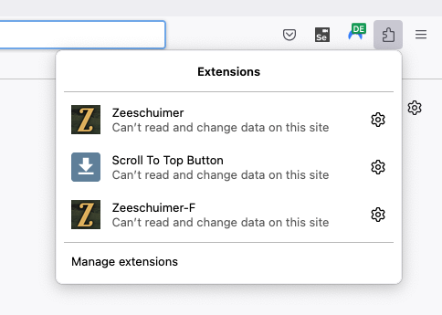
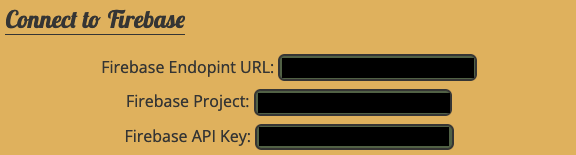
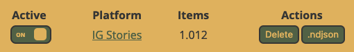

!pip -q install firebase-adminProject Creation
The following lines of code assume that the firebase Credential File has been downloaded from GRIPS and uploaded to Colab / your Jupyter project path. First of all install the necessary packages:
Next, we connect to our firebase project. Please update the credentials_path variable with the path to your credentials file (see above).
import firebase_admin
from firebase_admin import credentials, firestore
credentials_path = '/content/XXXX-adminsdk-YYYYYY.json'
cred = credentials.Certificate(credentials_path)
firebase_admin.initialize_app(cred)
db = firestore.client()Project Creation
Please provide an alert_email and project_name to create a new project on the backend. The backend checks hourly when the last stories have been uploaded to a project. If no story has been uploaded for more than 12 hours, an email alert will be triggered.
Run the cell to create the new project on the backend. When successfull, the project id and api key will be displayed.
from IPython.display import display, Markdown
import pandas as pd
alert_email = 'michael@achmann.me'
project_name = 'Forschungsseminar23 Test'
# Create Project
import uuid
# Generate a UUID for the document
project_id = str(uuid.uuid4())
api_key = str(uuid.uuid4())
# Your data
data = {
"api_key": api_key,
"email": alert_email,
"name": project_name
}
# Add a new document with a UUID as the document name (ID)
doc_ref = db.collection('projects').document(project_id)
doc_ref.set(data)
display(Markdown("### Project Created:"))
display(Markdown(f"**Project Name:** {project_name}"))
display(Markdown(f"**Alert Email:** {alert_email}"))
display(Markdown(f"**Project ID:** {project_id}"))
display(Markdown(f"**API-Key:** {api_key}"))Project Created:
Project Name: Forschungsseminar23 Test
Alert Email: michael@achmann.me
Project ID: 959466fe-4088-4099-a6b2-3cbe058889d3
API-Key: 554fbce8-fb15-44f1-bb4d-54cdc57554f2
Configure the Plugin
Configure Zeeschuimer-F using the above information after creating a project. In order to access the settings of Firefox plugins click on the puzzle tile on the top right of the browser. Click on Zeeschuimer F and the settings open.

Fill in the Firebase Project field with the project id and aFirebase API Key with the api key provided after running the Project Creation. The Firebase Endopint URL will be provided via GRIPS (unless you’ve installed your own instance).

1) Turn the IG Stories Switch on, 2) restart your browser for the values to be loaded correctly. Once the browser has started again, you’re ready to collect you first stories! Open the Instagram website and open any story.

Check the extension settings page to see whether it is collecting stories while browsing. The counter should increase with each story visit. The remote collection process can currently only be checked through the Firebase Interface notebook. Follow the next steps to download the collected data.
Project Export
The following code downloads all stories in JSON format and saves it locally (i.e. on your colab instance). Provide the PROJECT_ID variable and an export_path to download all stories.
from tqdm.auto import tqdm
import os
import json
PROJECT_ID = '959466fe-4088-4099-a6b2-3cbe058889d3'
export_path = '/content/export'
def fetch_stories(project_id):
stories_ref = db.collection('projects').document(project_id).collection('stories')
docs = stories_ref.stream()
stories = []
for doc in docs:
stories.append(doc.to_dict())
return stories
db = fetch_stories(PROJECT_ID)
if not os.path.exists('export'):
os.makedirs('export')
# Iterate over each element in the database
for element in tqdm(db, desc='Exporting elements'):
# Serialize the element to JSON
element_json = json.dumps(element, indent=4)
# Write to a file named {id}.json
with open(os.path.join('export', f"{element['id']}.json"), 'w') as f:
f.write(element_json)Convert to DataFrame
Next, we convert the exported JSON files to a pandas DataFrame and save the table as CSV. Provide the df_export_path variable for the location where to save the exported CSV file.
Work-In-Progress
The DataFrame in the current version has a different structure than the one we created when downloading Instagram Posts.. In order to compare stories with posts we will might want to use the same data structure.
import pandas as pd
from datetime import datetime, timedelta
df_export_path = '/content/2022-11-09-Stories-Exported.csv'
def process_instagram_story(data):
# Extract relevant information
story_info = {
'ID': data.get("id"),
'Time of Posting': datetime.utcfromtimestamp(data['taken_at']).strftime('%Y-%m-%d %H:%M:%S'),
'Type of Content': 'Video' if 'video_duration' in data else 'Image',
'video_url': None,
'image_url': None,
'Username': data['user']['username'],
'Video Length (s)': data.get('video_duration', None),
'Expiration': (datetime.utcfromtimestamp(data['taken_at']) + timedelta(hours=24)).strftime('%Y-%m-%d %H:%M:%S'),
'Caption': data.get('caption', None),
'Is Verified': data['user']['is_verified'],
'Stickers': data.get('story_bloks_stickers', []),
'Accessibility Caption': data.get('accessibility_caption', ''),
'Attribution URL': data.get('attribution_content_url', '')
}
return story_info
rows = []
for element in db:
rows.append(process_instagram_story(element))
df = pd.DataFrame(rows)
df.to_csv(df_export_path)
print(f"Successfully exported {len(df)} rows as CSV.")Successfully exported 22 rows as CSV.Now let’s take a look at the structure of the exported data:
df.head()| ID | Time of Posting | Type of Content | video_url | image_url | Username | Video Length (s) | Expiration | Caption | Is Verified | Stickers | Accessibility Caption | Attribution URL | |
|---|---|---|---|---|---|---|---|---|---|---|---|---|---|
| 0 | 3231585718932790545_1483455177 | 2023-11-08 14:50:59 | Image | <NA> | https://storage.googleapis.com/zeeschuimer-fb-... | rmf24.pl | NaN | 2023-11-09 14:50:59 | None | False | [] | Photo by Fakty RMF FM | Rozmowy | Podcasty on ... | |
| 1 | 3231585778860997221_1483455177 | 2023-11-08 14:51:06 | Image | <NA> | https://storage.googleapis.com/zeeschuimer-fb-... | rmf24.pl | NaN | 2023-11-09 14:51:06 | None | False | [] | Photo by Fakty RMF FM | Rozmowy | Podcasty on ... | |
| 2 | 3231750838597692854_1349651722 | 2023-11-08 20:19:00 | Video | https://storage.googleapis.com/zeeschuimer-fb-... | <NA> | tagesschau | 13.300 | 2023-11-09 20:19:00 | None | True | [] | ||
| 3 | 3231750989408058657_1349651722 | 2023-11-08 20:19:18 | Video | https://storage.googleapis.com/zeeschuimer-fb-... | <NA> | tagesschau | 15.267 | 2023-11-09 20:19:18 | None | True | [] | ||
| 4 | 3231751135118088390_1349651722 | 2023-11-08 20:19:35 | Video | https://storage.googleapis.com/zeeschuimer-fb-... | <NA> | tagesschau | 17.000 | 2023-11-09 20:19:35 | None | True | [] |
Download Images and Videos
All videos and images for our Instagram stories have been downloaded by our firebase backend. They are saved in a Cloud Bucket. The following cell helps with these two steps:
- Create a signed link to each video and image
- Download each file and saves it in the following structure:
{media_export_path}/{image|video}/{username}/{ID.jpg|mp4}. It is important to keep a unique identifier (hereID) to map metadata and images for future data analysis.
Please provide a storage_bucket and media_export_path.
storage_bucket = "XXXX.appspot.com"
media_export_path = '/content/media/'
from firebase_admin import storage
import os
import requests
bucket = storage.bucket(storage_bucket)
def generate_signed_url(username, content_id, file_type):
if file_type not in ['images', 'videos']:
raise ValueError("Invalid file type specified")
ext = 'jpeg' if file_type == 'images' else 'mp4'
blob_path = f"projects/{PROJECT_ID}/stories/{file_type}/{username}/{content_id}.{ext}"
blob = bucket.blob(blob_path)
# Set the expiration of the link. Here, it's set to 24 hours.
return blob.generate_signed_url(expiration=timedelta(hours=24), method='GET')
# Create a function to be applied across DataFrame rows
def apply_generate_signed_url(row):
image_url = generate_signed_url(row['Username'], row['ID'], 'images')
video_url = generate_signed_url(row['Username'], row['ID'], 'videos') if row['Type of Content'] == 'Video' else pd.NA
return pd.Series({'image_url': image_url, 'video_url': video_url})
# Apply the function along the axis=1 (row-wise)
df[['image_url', 'video_url']] = df.apply(apply_generate_signed_url, axis=1)
# Now, creating the lists for images and videos can be done more efficiently
data_images = df.loc[df['image_url'].notna(), ['ID', 'image_url', 'Username', 'Time of Posting']] \
.rename(columns={'image_url': 'url', 'Time of Posting': 'datetime'}) \
.to_dict('records')
data_videos = df.loc[df['video_url'].notna(), ['ID', 'video_url', 'Username', 'Time of Posting']] \
.rename(columns={'video_url': 'url', 'Time of Posting': 'datetime'}) \
.to_dict('records')
def create_directories(base_path, entries, subdir):
usernames = set(entry['Username'] for entry in entries)
for username in usernames:
os.makedirs(os.path.join(base_path, subdir, username), exist_ok=True)
def download_file(entry, media_type, media_export_path, session):
directory = os.path.join(media_export_path, media_type, entry['Username'])
ext = 'jpg' if media_type == 'images' else 'mp4'
filename = os.path.join(directory, f"{entry['ID']}.{ext}")
with session.get(entry['url'], stream=True) as response:
if response.status_code == 200:
with open(filename, 'wb') as file:
for chunk in response.iter_content(8192):
file.write(chunk)
else:
print(f"Failed to download {entry['url']}. Status code: {response.status_code}")
session = requests.Session()
# Pre-create directories
create_directories(media_export_path, data_images, 'images')
create_directories(media_export_path, data_videos, 'videos')
# Download images
for entry in tqdm(data_images, desc="Downloading Images", unit="file"):
download_file(entry, 'images', media_export_path, session)
# Download videos
for entry in tqdm(data_videos, desc="Downloading Videos", unit="file"):
download_file(entry, 'videos', media_export_path, session)
print("Download complete!")Download complete!Prepare Downloadable ZIP
Run the following to ZIP all files. Optionally copy them to Google Drive.
!zip -r 2023-11-09-Story-Media-Export.zip media/*!cp 2023-11-09-Story-Media-Export.zip /content/drive/MyDrive/